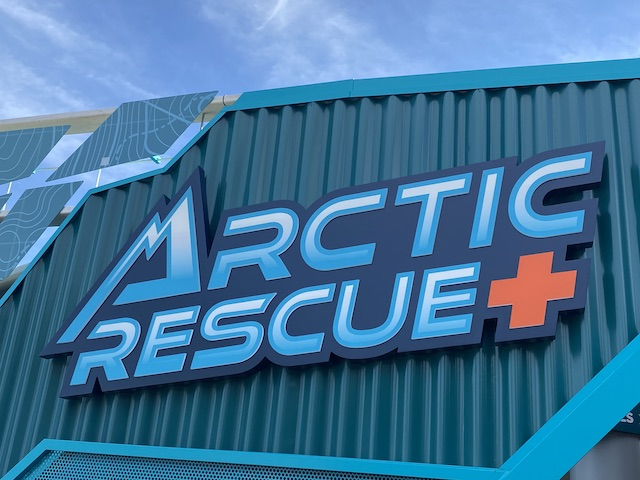
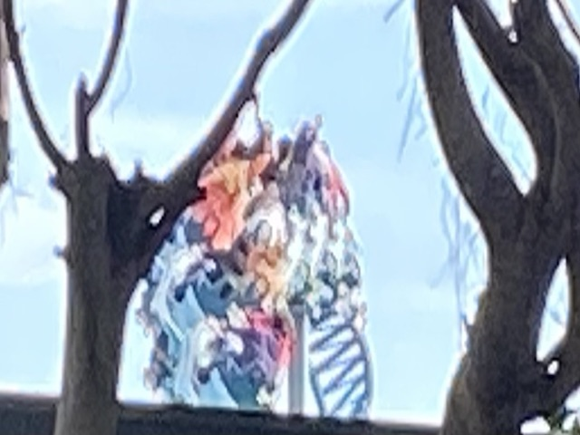
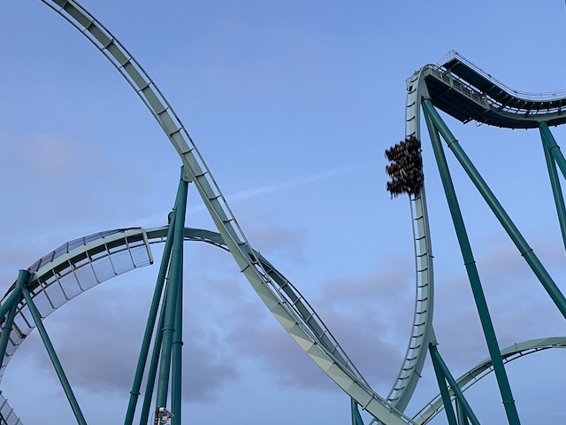

| |
Arctic Rescue Day
 All right. We have returned to Sea World San Diego. It has been a little over a year since....our last visit. But despite that, we were GREATLY overdue to get back to the park. So yeah. We're here at Sea World San Diego today.
All right. We have returned to Sea World San Diego. It has been a little over a year since....our last visit. But despite that, we were GREATLY overdue to get back to the park. So yeah. We're here at Sea World San Diego today.
Hello Journey to Atlantis track that is stuck in the parking lot.
Hello Journey to Atlantis track that is stuck in the parking lot.
 *Sigh* We did NOT pick a good day to visit the park. I just picked the one day both Jason and I had off that aligned with both of our schedules. Unfortunately, that turned out to be MLK Day. Which....JESUS CHRIST!!! SEA WORLD IS MORE CROWDED TODAY THAN ON A SUMMER SATURDAY!!! I REALLY wish our schedules aligned on a less monsterously busy day. But....*sigh* Oh well. We'll be back. It's not like this is our one visit for the year.
*Sigh* We did NOT pick a good day to visit the park. I just picked the one day both Jason and I had off that aligned with both of our schedules. Unfortunately, that turned out to be MLK Day. Which....JESUS CHRIST!!! SEA WORLD IS MORE CROWDED TODAY THAN ON A SUMMER SATURDAY!!! I REALLY wish our schedules aligned on a less monsterously busy day. But....*sigh* Oh well. We'll be back. It's not like this is our one visit for the year.
 Say it louder for the haters in the back!
Say it louder for the haters in the back!
Ooh. I'll have to check out the new Jellyfish exhibit when I come back (we have passes this year. Need them to get to two certain SeaWorld/Busch parks this Fall). =)

So yeah. Sea World opened up Arctic Rescue in 2023 as their new coaster. However, we were unable to hit it then because that year was a dumpster fire. So we finally made it to Sea World to check out their new 2023 coaster in early 2024.
Time to get a new credit today!
*Sigh* Damn my urgency to get here since I'm already late enough as is (at least the update is on time finally though).
At least I see their new ride is very popular at least.

So Arctic Rescue is one of those Intamin Motorbike coasters. This is my 2nd one after riding Juvalen (forgot about that ride. Fun ride).
 So a lot of people have been saying that Arctic Rescue is essentially a tamer Manta. And....yeah. I agree with that statement.
So a lot of people have been saying that Arctic Rescue is essentially a tamer Manta. And....yeah. I agree with that statement.
But while Arctic Rescue isn't as good as Manta, it still is a fantastic family coaster that has a lot of fun. The constant launches and long length just make it a really fun ride.
Even Jason was able to get on today. Big thumbs up from Incrediblecoasters (I see you photobombing us random ride operator).
However, if you're still unhappy with the decision to remove Wild Arctic with Arctic Rescue (despite being a MASSIVE improvement) for some strange reason. A: You can still ride the simulator (without the simulation) online. B: If it's the animal exhibit you care about, you're in luck. The simulator may be gone, but you can still see all the animals.
Hello Mr. Beluga Whale. Are you enjoying all the newfound popularity thanks to Arctic Rescue?
Just in case you need a quick reminder. Ice is cold. =P
"I see someone still needs to brush his teeth. You need to work on that Mr. Walrus."
Be careful going out into the snow. You just might fall into a polar bear's den.
"Hey! What are you doing out there on land!? Get in the water and play with me god damn it!"
Sorry Jason. But Journey to Atlantis is currently closed today.
Bah! So what if there's no water!? No big deal! Send the train right now! >=)
 HOLY CRAP!!! They just flat out removed the drop on the ride! I know this is just for maintenence and it'll be put back. But it does look kind of spooky to just see the entire drop just....GONE!!!
HOLY CRAP!!! They just flat out removed the drop on the ride! I know this is just for maintenence and it'll be put back. But it does look kind of spooky to just see the entire drop just....GONE!!!
Wow. When Emperor is gaining that long of a line, yeah. You know you f*cked up in choosing a day to visit.
Let me see if I have any better luck with Electric Eel.
I never noticed this Single Riders Line on Electric Eel before. Good thing I found it since....it was BEYOND NECESSARY TODAY!!!
It may be a clone, but it's a damn good clone.
Glad to see Sea World still promoting their new ride.
So while I was doing Electric Eel, Jason got this air-brushed painting of us as dolphins. Aww. How cute. =)
And now, a word from our penguin overlords.
"What do you mean you cost $70 giant stuffed penguin!?"
Paying our dues at Sea World by feeding the cleaner fish.
Now I may not be a marine biologist, but even I'm pretty sure that whales are not made out of wood.
The ocean ecosystem is very important. Don't f*ck it up with your plastic pollution.
One of these days, I'll have to actually do an animal encounter here. Unfortunately, that just isn't in my budget right now. I can barely afford my 2024 plans (and that's after completely bombing 2023 and making some big changes).
Glad to see Shouka is still thriving at Sea World San Diego. =)
"Hello bitches! Still doing well over here at Sea World!"
 ALL INFIDELS WILL BE SPLASHED!!!
ALL INFIDELS WILL BE SPLASHED!!!

The Emperor line died down a bit, so we were able to get on it. Still my favorite coaster in San Diego.
Unfortunately, I was unable to do all the major coasters at Sea World today. We had to miss Manta today. We got in line for it. And within 5 minutes, it broke down. So we just bailed on it. Oh well. I'll be back for you next time Manta.
Well, we may not be able to ride Manta today. But at least we can pet some Manta rays.
OK. We had our fun at Sea World. Time to meet up with a friend for....is your Christmas Tree still up!? IT'S F*CKING JANUARY!!! AND MID-JANUARY AT THAT!!! TAKE DOWN YOUR CHRISTMAS TREE!!!
Anyways, we had dinner with one of our San Diego friends. The food at Crest Cafe was pretty good. And don't worry. We'll be back in town soon.
Home
|